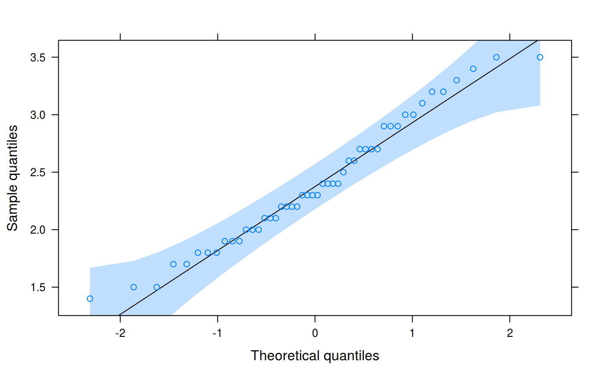

Draw quantile-Quantile plots of a sample against a theoretical distribution, possibly conditioned on other variables.
# S3 method for zoo qqmath(x, data = NULL, xlab = "Theoretical quantiles", ylab = "Sample quantiles", ref = TRUE, ci = TRUE, ...)
| x | A |
|---|---|
| data | Ignored |
| xlab | X axis label |
| ylab | Y axis label |
| ref | Plot a reference line via |
| ci | Plot confidence levels via |
| ... | Parameters to pass on to |
Plots and returns a trellis object.
#>#> #>#> #> #>